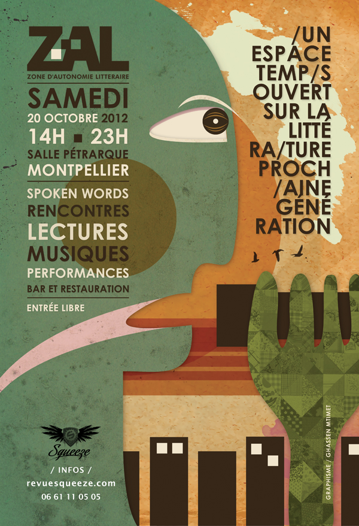

La tragédie du livre – avis de tempête numérique
Tout un programme. Je m’y attaque en duo avec Nicolas Ancion, le 20 octobre, 14:45, à Montpellier, lors de la Zone d’Autonomie Littéraire organisée par la revue Squeeze.
Notre cahier des charges : « Il s'agira de traiter des effets pervers possibles/probables du numérique sur la qualité littéraire et donc, par extension, d'en considérer également les aspects positifs et de donner quelques recettes de survie. L'auteur devient une sorte de héros tragique, luttant contre les vents contraires. »
Pour mémoire, souvenir de la ZAL 2011. Actu de la ZAL 2012...

Suite | 2012 | Sommaire | Texte publié vendredi 12 octobre 2012